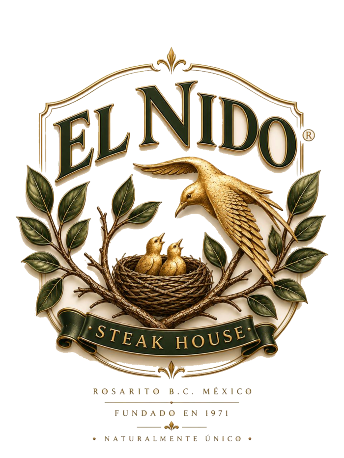
Medio siglo de fuego, encino y
cocina honesta.
Abrimos nuestras puertas en 1971. Desde entonces asamos con la misma leña de encino, preparamos la misma sopa de frijol y servimos el mismo café de siempre — con casi el mismo personal con el que empezamos.
El Nido abre como un bar, una cuadra al sur de su ubicación actual — el arrendador pensaba que un restaurante desperdiciaría demasiada agua.
Nos mudamos a nuestra ubicación actual y comenzamos a servir auténtica cocina regional, asada con leña de encino.
Adquirimos un criadero de codornices en el Valle de Guadalupe e inauguramos el hotel-restaurante Los Pelicanos, frente al mar.
Traemos venado «Red Deer» de Nueva Zelanda — 98 hembras y 4 machos — y el venado se vuelve parte de nuestra mesa.
Comenzamos a producir carne de res de pastoreo, grass-fed, en Rancho Guacatay — para una machaca como ninguna.
Abrimos un espacio de vida de campo: granja interactiva, cabañas y spa, con productos artesanales de leche de cabra y vaca.
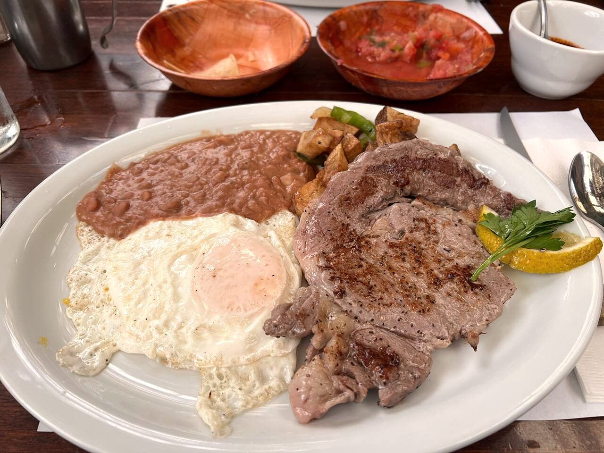
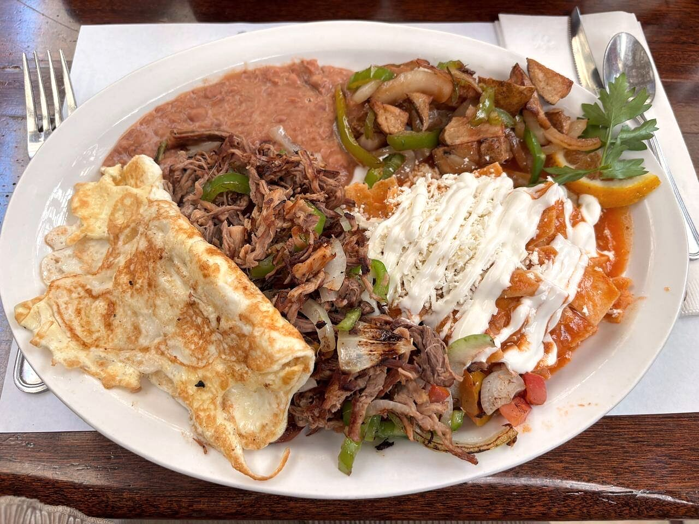
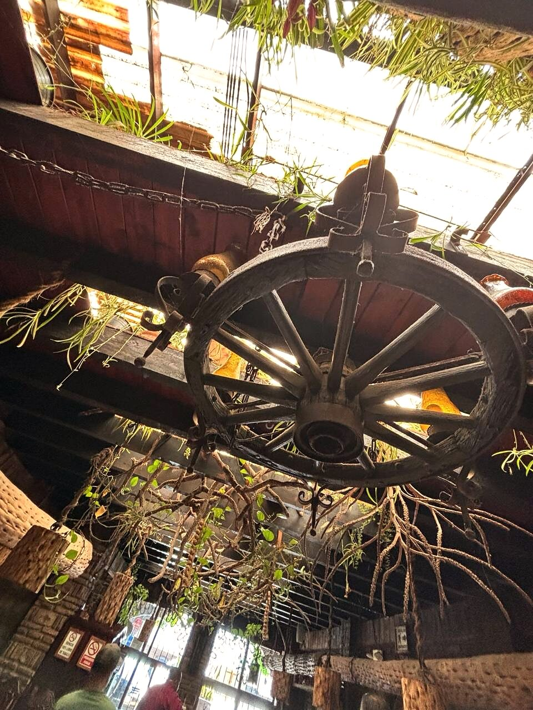
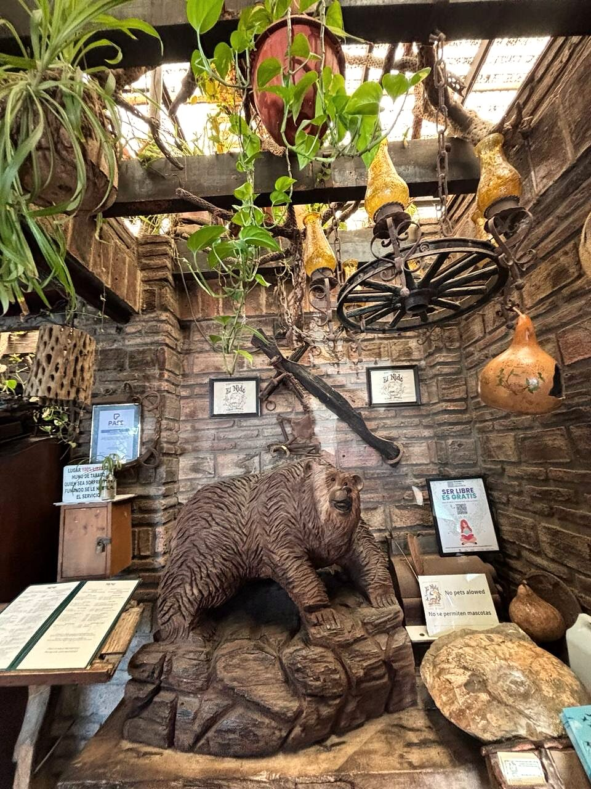
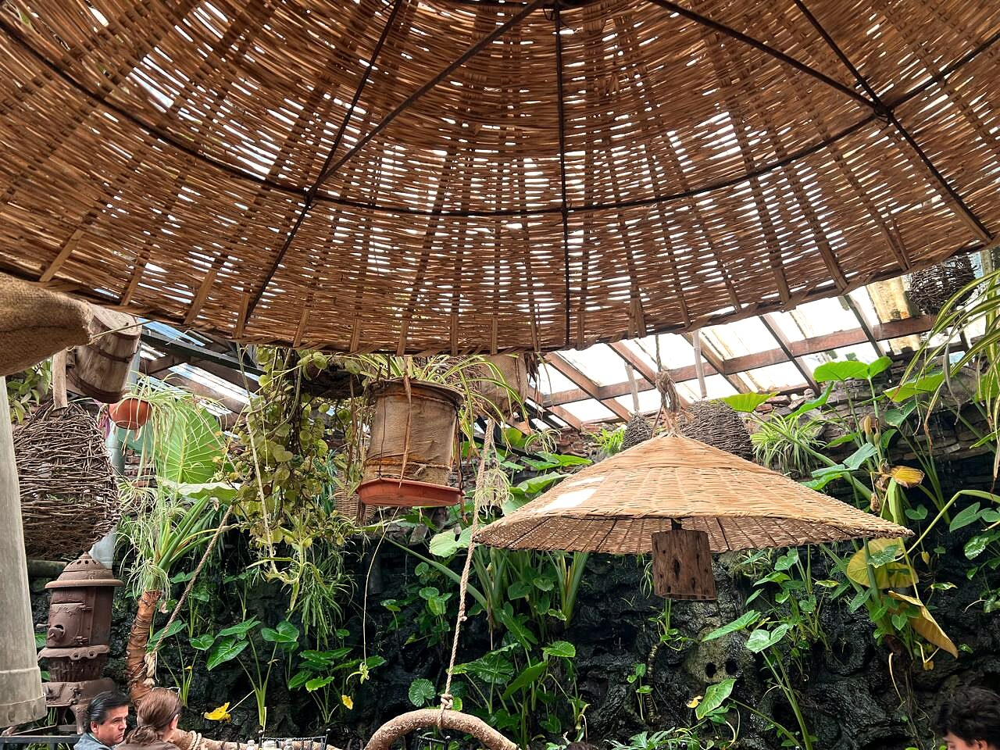
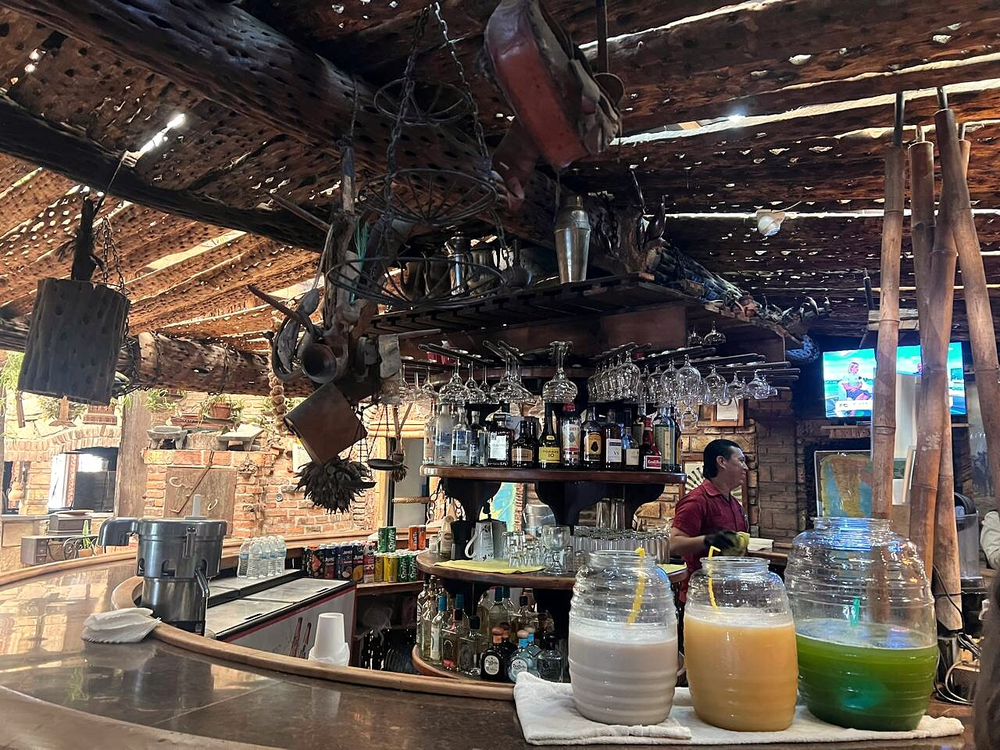
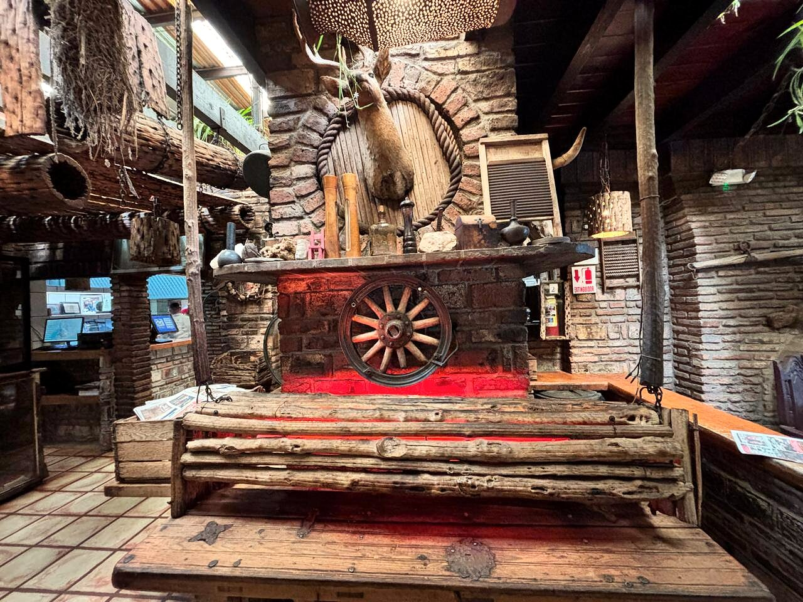
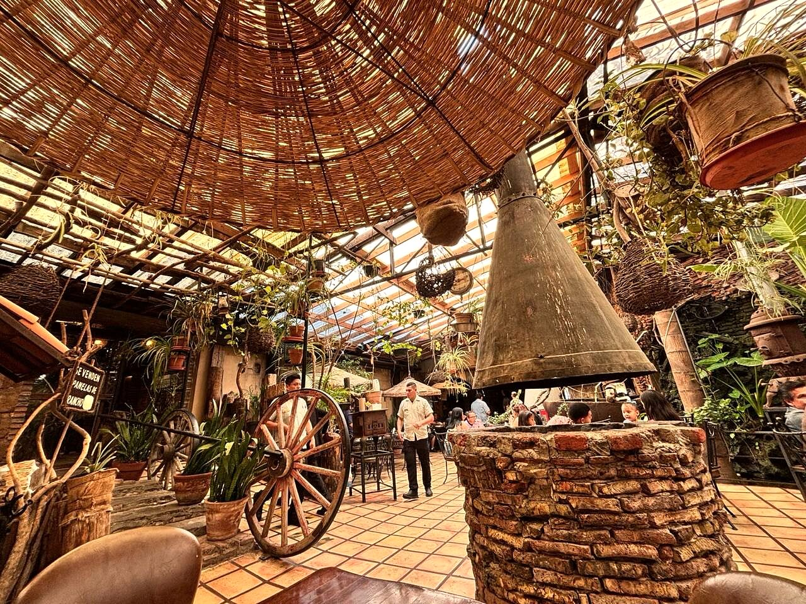
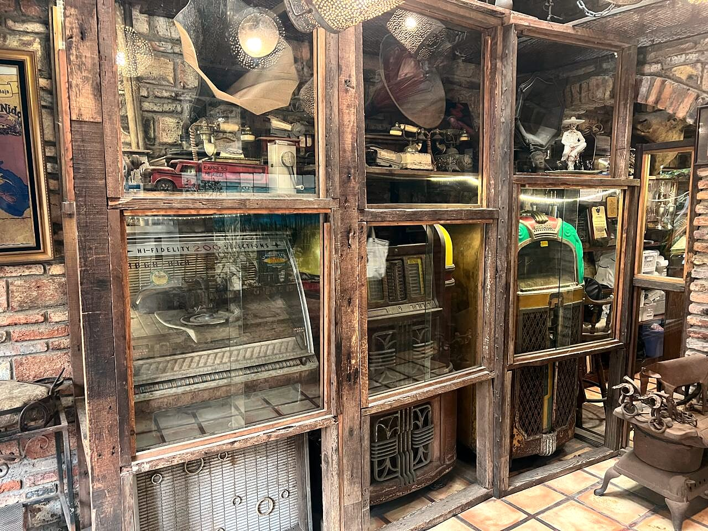
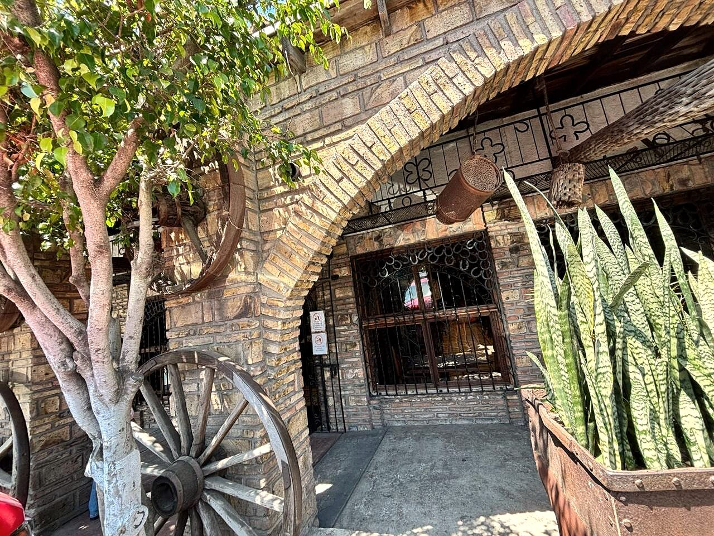